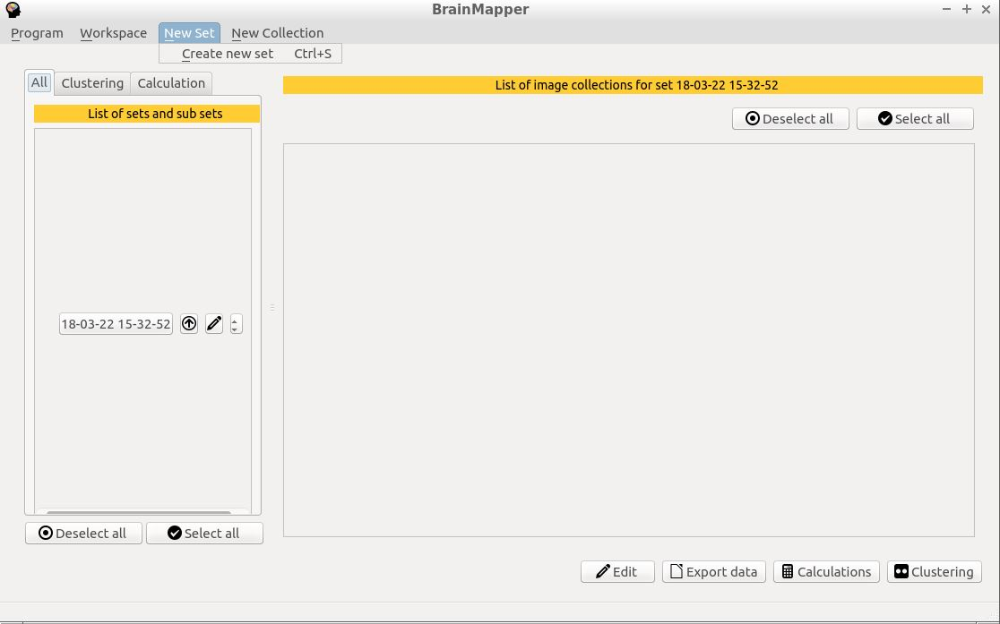

Clustering on NIfTI data
brain-Mapper aims to allow the user to use the interesting data from NIfTI files to perform clustering algorithms and thus determine the different groups of voxels.
To accomplish this, brain-Mapper extracts the data from NIfTI files and allows you to select the method you would like to apply. Clustering results can be exported as a CSV file or
saved in the application, and thus be exported as new NIfTI files.
In this section we explain the main functionalities of our software around clustering
3.1 Data extraction for clustering
When you launch the software, a set named with the current date is created. It will prevent name problems (when some sets have the same name).
To create a new set, you can use the shortcut "Ctrl+S" or click on the menu "New Set"/ "Create new set"

3.1.2 Use all points of an image
3.1.3 Use the image's points centroid as data
3.2 Apply clustering algorithms on extracted data
3.2.1 KMeans
3.2.2 KMedoids
3.2.3 Agglomerative Clustering
3.2.3.1 Ward Linkage
3.2.3.2 Mean Linkage
3.3 Execute custom functions : user script environment
3.4 Clustering results
3.4.1 Cluster assignment
3.4.1.1 Save as set
3.4.1.2 Export as CSV file
3.4.2 Graphic visualisation
3.4.3 Internal Validation indexes
3.4.3.1 Mean Silhouette
3.4.3.2 Calinski-Habaraz score
3.4.3.3 Davis-Boulin index